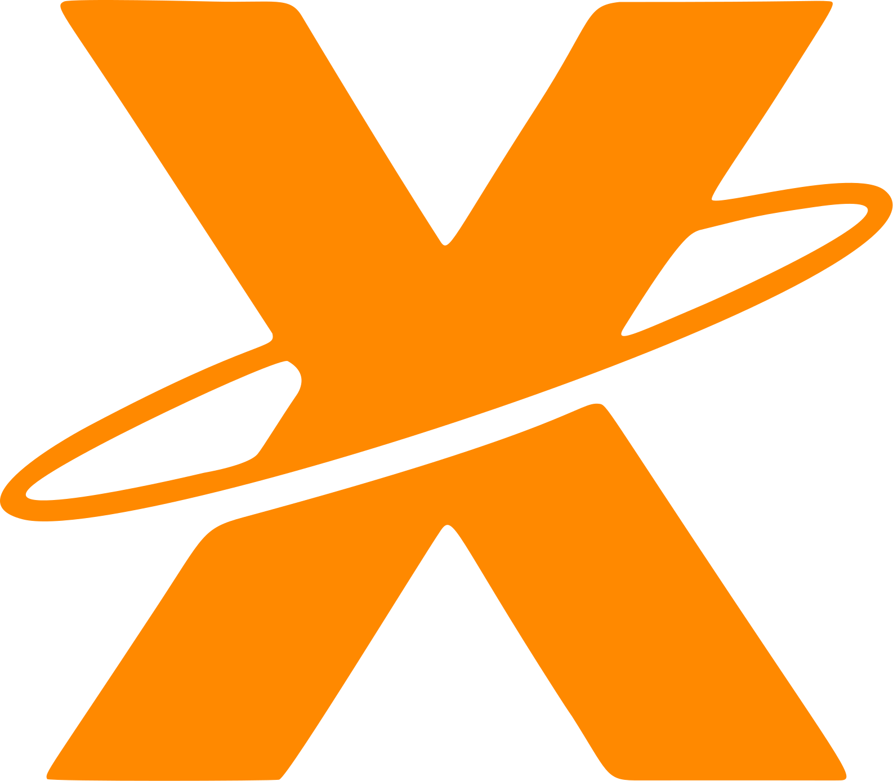

<!DOCTYPE html>
<html lang="pt-BR">
<!--
  ============================================================
  DESCRIÇÃO DO ASTRO (nº 7) — referência visual: telas/07-astro.png
  ============================================================
  Esta tela é exibida quando o usuário seleciona ou clica em um astro
  no universo 3D. O fundo 3D continua nítido (sem desfoque) e um painel
  descritivo se abre no lado esquerdo, detalhando o astro selecionado.

  PARTES DESTA TELA E SEUS IDs:
  1. .fundo-teste            → fundo de teste sem desfoque (REMOVER NO PROJETO FINAL)
  2. #tela-astro             → container raiz (pointer-events: none)
  3. #painel-astro           → painel flutuante de vidro no lado esquerdo
  4. #subtipo-astro          → subtipo/categoria do astro (ex.: PLANETA COM ANÉIS · ÁREA DA VIDA)
  5. #botao-fechar-astro     → botão "✕" para fechar o painel e voltar à visualização livre
  6. #nome-astro             → título/nome do astro (ex.: Família)
  7. #descricao-astro        → descrição narrativa principal do astro
  8. #rotulo-porque          → rótulo da seção "POR QUÊ?"
  9. #citacao-astro          → citação destacada com borda laranja
  10. #texto-porque          → texto complementar da seção "POR QUÊ?"
  11. #rotulo-fase           → rótulo "FASE"
  12. #texto-fase            → texto descritivo da fase atual do astro
  13. #rotulo-peso-emocional → rótulo "PESO EMOCIONAL"
  14. #pontos-peso-astro     → indicador de peso em 5 pontos (3 ativos, 2 inativos)
  15. #rotulo-profundidade   → rótulo "PROFUNDIDADE"
  16. #valor-profundidade    → valor da profundidade (ex.: recente)
  17. #barra-inferior        → barra fixa no rodapé compartilhada pelas telas 5, 6 e 7

  AO CLICAR (lógica futura do projeto):
  - #botao-fechar-astro → fecha o painel do astro e retorna à Tela 5
  - #botao-menu         → abre o menu (tela 8)
  - #botao-retroceder   → retrocede a fase na timeline 3D
  - #botao-avancar      → avança a fase na timeline 3D
  - #botao-saibamais    → abre o painel "Como ler este universo" (tela 6)
  ============================================================
-->
<head>
  <meta charset="UTF-8">
  <meta name="viewport" content="width=device-width, initial-scale=1.0">
  <title>NEXUS — Descrição do Astro</title>

  <!-- Base: variáveis CSS, fontes e regras comuns -->
  <link rel="stylesheet" href="css/base.css">

  <!-- Hover: anel de luz global — deve vir logo após base.css -->
  <link rel="stylesheet" href="css/hover.css">

  <!-- CSS da barra inferior compartilhada -->
  <link rel="stylesheet" href="css/barra-inferior.css">

  <!-- CSS específico desta tela: painel descritivo do astro -->
  <link rel="stylesheet" href="css/tela-astro.css">

  <!-- Fundo de teste sem desfoque (REMOVER NO PROJETO FINAL) -->
  <link rel="stylesheet" href="css/fundo-teste.css">
</head>
<body>

  <!-- FUNDO DE TESTE (REMOVER NO PROJETO FINAL) -->
  <div class="fundo-teste" aria-hidden="true"></div>

  <!-- INTERFACE DO ASTRO -->
  <div class="nexus-ui" id="tela-astro">

    <!-- PAINEL DESCRITIVO DO ASTRO -->
    <aside class="painel-astro" id="painel-astro" aria-labelledby="nome-astro">

      <!-- Cabeçalho: subtipo e botão fechar -->
      <header class="cabecalho-astro">
        <span class="subtipo-astro" id="subtipo-astro">PLANETA COM AN&Eacute;IS &middot; &Aacute;REA DA VIDA</span>
        <button class="btn-fechar-astro" id="botao-fechar-astro" type="button" aria-label="Fechar descrição do astro">
          <span class="btn__feixe" aria-hidden="true"></span>
          &#10005;
        </button>
      </header>

      <!-- Título: Nome do astro -->
      <h1 class="titulo-astro" id="nome-astro">Fam&iacute;lia</h1>

      <!-- Descrição principal -->
      <p class="descricao-astro" id="descricao-astro">
        Cada anel &eacute; uma camada de hist&oacute;ria: inf&acirc;ncia, expectativas, luto, obriga&ccedil;&otilde;es e mem&oacute;rias. Os an&eacute;is s&atilde;o bonitos &agrave; dist&acirc;ncia, mas tamb&eacute;m representam coisas que continuam girando ao redor de Helena mesmo depois de j&aacute; terem passado.
      </p>

      <!-- Seção "POR QUÊ?" -->
      <section class="secao-astro" aria-labelledby="rotulo-porque">
        <h2 class="rotulo-secao-astro" id="rotulo-porque">POR QU&Ecirc;?</h2>
        <blockquote class="citacao-astro" id="citacao-astro">
          Lei da escala: a dura&ccedil;&atilde;o de um astro &eacute; a perman&ecirc;ncia dele na mente.
        </blockquote>
        <p class="texto-secao-astro" id="texto-porque">
          Os an&eacute;is representam perman&ecirc;ncia: hist&oacute;rias que continuam em &oacute;rbita mesmo quando seu tempo j&aacute; passou. A escala do planeta mostra a dura&ccedil;&atilde;o desses v&iacute;nculos.
        </p>
      </section>

      <!-- Bloco "FASE" -->
      <p class="bloco-fase-astro" id="bloco-fase">
        <span class="rotulo-fase-astro" id="rotulo-fase">FASE</span>
        <span class="texto-fase-astro" id="texto-fase">planeta com an&eacute;is: lembran&ccedil;as e pend&ecirc;ncias em &oacute;rbita</span>
      </p>

      <!-- Rodapé com métricas -->
      <footer class="rodape-astro" id="rodape-astro">

        <!-- Coluna 1: Peso Emocional (5 pontos) -->
        <div class="coluna-metrica-astro" id="coluna-peso">
          <span class="rotulo-metrica-astro" id="rotulo-peso-emocional">PESO EMOCIONAL</span>
          <div class="pontos-peso-astro" id="pontos-peso-astro" role="img" aria-label="Peso emocional 3 de 5">
            <span class="ponto-astro ativo" aria-hidden="true"></span>
            <span class="ponto-astro ativo" aria-hidden="true"></span>
            <span class="ponto-astro ativo" aria-hidden="true"></span>
            <span class="ponto-astro inativo" aria-hidden="true"></span>
            <span class="ponto-astro inativo" aria-hidden="true"></span>
          </div>
        </div>

        <!-- Coluna 2: Profundidade -->
        <div class="coluna-metrica-astro" id="coluna-profundidade">
          <span class="rotulo-metrica-astro" id="rotulo-profundidade">PROFUNDIDADE</span>
          <span class="valor-profundidade-astro" id="valor-profundidade">recente</span>
        </div>

      </footer>

    </aside><!-- fim #painel-astro -->


    <!-- BARRA INFERIOR DE CONTROLE -->
    <footer class="barra-inferior" id="barra-inferior">

      <!-- Esquerda: isotipo (abre o menu) -->
      <div class="barra-zona barra-esquerda">
        <button class="barra-btn" id="botao-menu" type="button" aria-label="Menu NEXUS">
          <span class="btn__feixe" aria-hidden="true"></span>
          
        </button>
      </div>

      <!-- Centro: navegação temporal (RETROCEDER | ampulheta | AVANÇAR) -->
      <div class="barra-zona barra-centro">
        <button class="barra-btn barra-btn-texto" id="botao-retroceder" type="button">
          <span class="btn__feixe" aria-hidden="true"></span>
          RETROCEDER
        </button>
        
        <button class="barra-btn barra-btn-texto" id="botao-avancar" type="button">
          <span class="btn__feixe" aria-hidden="true"></span>
          AVANÇAR
        </button>
      </div>

      <!-- Direita: saiba mais (?) -->
      <div class="barra-zona barra-direita">
        <button class="barra-btn" id="botao-saibamais" type="button" aria-label="Como ler este universo">
          <span class="btn__feixe" aria-hidden="true"></span>
          
        </button>
      </div>

    </footer>

  </div><!-- fim #tela-astro -->

</body>
</html>
